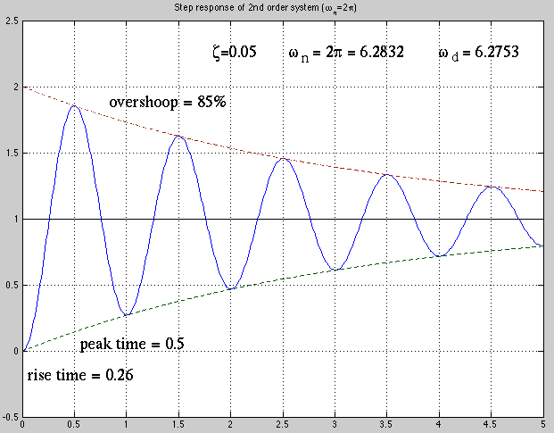

We next consider the complete solution (composed of both homogeneous
and particular solutions) of the 2nd order DE
with a unit step input and zero initial conditions
 . As the input is a constant for , we can
assume the particular solution to be a constant with zero
derivatives
. Substituting these into the DE above,
we get
, i.e., the steady state solution is:
The complete response can be obtained as the sum of the homogeneous
solution (same as that obtained previously) and particular solution,
corresponding to the transient and steady state response, respectively:
The two coefficients
. As the input is a constant for , we can
assume the particular solution to be a constant with zero
derivatives
. Substituting these into the DE above,
we get
, i.e., the steady state solution is:
The complete response can be obtained as the sum of the homogeneous
solution (same as that obtained previously) and particular solution,
corresponding to the transient and steady state response, respectively:
The two coefficients  and
and  can be obtained based on the two
zero initial conditions:
can be obtained based on the two
zero initial conditions:
Solving these equations we get:
Now the complete solution becomes:
Alternatively, the nonhomogeneous 2nd-order LCCODE given above can
be converted into a 1st-order ODE system and solving which we obtain
the same results, as shown
here.
The two roots and  take different forms depending on
whether the discriminant
is greater
or smaller than 0, i.e., whether
take different forms depending on
whether the discriminant
is greater
or smaller than 0, i.e., whether  is greater or smaller then 1.
Here we only consider the case when
, i.e., ,
for an under-damped second order system. The two roots are
is greater or smaller then 1.
Here we only consider the case when
, i.e., ,
for an under-damped second order system. The two roots are
and |
(233) |
where is the damped natural frequency:
 |
(234) |
Finally the complete solution of the non-homogeneous DE is:
where
In particular, if  , we have
, we have
The plots below shows an example with
. Note the critical
damped case when . An overshoot will occur for any .
The step response is plotted below. Note that and
 .
.

Example
Consider the response
 of an undamped 2nd order RCL system.
of an undamped 2nd order RCL system.
- Find the response of the RLC circuit to a step input
.
The general solution is the sum of the homogeneous solution
and the particular solution
 :
Consider two different sets of initial conditions:
:
Consider two different sets of initial conditions:
- Zero initial conditions
. We have
and
, and
- , . We have
and
,
i.e., and
- Find the system's response to a square impulse
As
, the response is
![$\displaystyle y(t)=[1-\cos(\omega_nt)]u(t)-[1-\cos(\omega_n(t-t_0))]u(t-t_0)$](img679.svg) |
(242) |
When , we have
We further consider two special cases.
- When
, we have
This is a one period of a sinusoid.
- When
, we have
This is a pure sinusoid after .
- Find the impulse response . The input
 is an impulse which
can be written as
When
, we have first order approximations
and
,
and we get
Substituting this into
is an impulse which
can be written as
When
, we have first order approximations
and
,
and we get
Substituting this into
 we get the impulse response
we get the impulse response
- It is often desirable for a second order system to reach a set steady
state value without overshoot. This can be achieved by driving the system
by an impulse
with response
, followed
by a step with response
The total response is
We see that after reaches the first peak of
 at , it will
stay at the constant value as the two responses cancel each other for
.
at , it will
stay at the constant value as the two responses cancel each other for
.
- Alternatively, the steady state value can be achieved without
overshoot by applying an input
. The response to
is
while the response to
is
The overall response is the difference between the two individual responses:
![$\displaystyle y(t)=\left\{\begin{array}{cl}
[1-\cos\omega_nt]/2 & 0<t<T/2 \\ 1 & t>T/2 \end{array} \right.$](img712.svg) |
(253) |
i.e., the response is for all .
- It is desirable for a second order system to reach a steady state value
within a time delay without overshoot. We first consider
driving the system with a positive square pulse of value followed
by a negative one of :
The response for
is:
In order for the output to be a constant for , we need to
have the input for , and set the initial conditions at
to be and
. To do so, we let
Based on the trigonometric identity
, the equation above
can be written as
Substituting this into the desired initial condition , we get
where we have used the trigonometric identities
and
. Solving this for we get
As now we have the initial conditions and
as
needed. If we set for , so that the output will be at
constant when .


![$\displaystyle \frac{1}{\omega_n^2}\left[1-\frac{e^{-\zeta\omega_nt}}{\sqrt{1-\zeta^2}}
\sin(\omega_dt+\phi) \right]$](img658.svg)